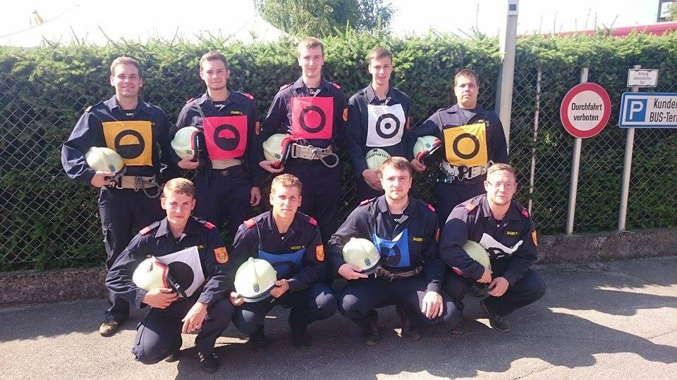

Der Landesfeuerwehrbewerb in Mank geht in die Geschichtsbücher unserer Feuerwehr ein. Zum
ersten Mal in der 58-jährigen Wettkampfgeschichte der FF-Heinreichs schaffte es eine Gruppe
die 400-Punkte Marke zu knacken. Ein fehlerfreier Angriff in 42,90 Sekunden und eine Staffellaufzeit
von 54,37 Sekunden ergaben 402,73 Punkte. Mit Platz 85 von 665 Gruppen ist unsere Feuerwehr
zusätzlich noch die am besten platzierte Gruppe des gesamten Bezirkes Waidhofen/Thaya

Zurück zur Startseite!
-
 Facebook
Facebook